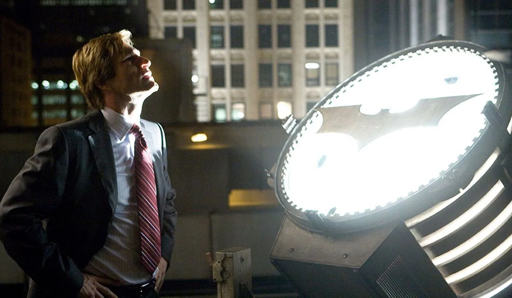
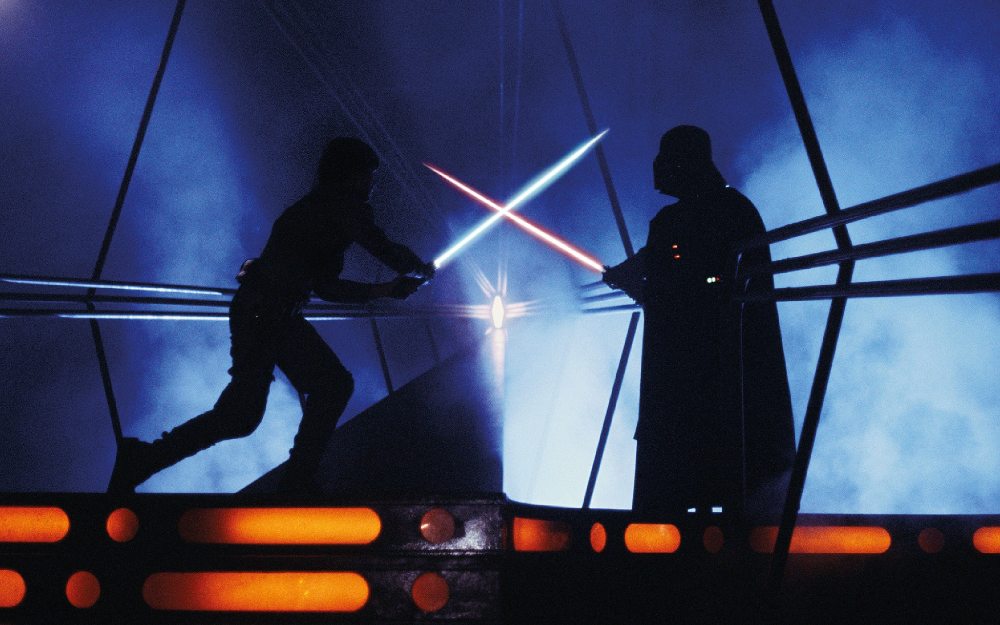
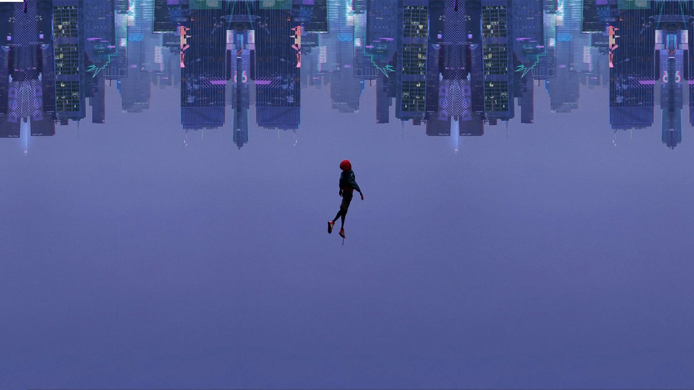

The Dark Knight
de
Christopher Nolan
Protagonizada por Christian Bale, Heath Ledger, Gary Oldman, Aaron Eckhart y Morgan Freeman, estrenada en 2008, es considerada por muchos en donde me incluyo como la mejor película de superhéroes de todos los tiempos, destacando la actuación de Heath Ledger como el Joker valiéndole un Óscar póstumo, un clásico del cine moderno, donde se nos presenta como el caballero oscuro contempla mirar hacia el abismo y romper su única regla, mostrando un Batman más humano.
Nos presenta que la vida no solo es blanca o negra, tiene matices grises, donde no siempre tomar la decisión buena dará el mejor resultado por el bien mayor. Tenemos a otro de los villanos de la galería de Batman haciendo su debut, Harvey Dent donde al igual que Batman lo vemos enfrentar decisiones que puede cambiar la vida y lo que pensamos que es bueno o malo, cuestionando si hacer lo correcto siempre será recompensado, donde lo único justo e imparcial es el azar.
Al final podemos terminar siendo el villano tratando de hacer lo correcto, donde el bien y el mal no son absolutos, y depende de quien lo vea.
Star Wars: Episode V The Empire Strikes Back
de
Irvin Kershner
La secuela del fenómeno mundial Star Wars de 1977, luego llamada Star Wars: Episode IV A New Hope, el episodio V estrenado en 1980 se considera la mejor la saga, protagonizada por Mark Hamill, Harrison Ford y Carrie Fisher, tres años luego de la destrucción de la estrella de la muerte el Imperio busca a la alianza rebelde por la galaxia. Empezamos a ver el entrenamiento de Luke por el Maestro Yoda en Dagobah, donde Luke es seducido por el lado oscuro de la fuerza.
Durante la película podemos observar como algunos personajes van cambiando su forma de pensar y actuar, no pensando ya solo en ellos mismos sino en el bien común de la galaxia. Uno de los giros de trama menos esperados en esa época sucede dentro de un duelo de sables de luz, entre un jedi y un sith, luchando por la vida de un amigo.
El héroe no siempre gana la guerra, pero siempre que se tenga esperanza nada está perdido aún hay aliento para seguir, al final podemos observar como los protagonistas crecen como persona, demostrando que la amistad es más fuerte que la venganza.
Spider-Man: Into the Spider-Verse
de
Peter Ramsey, Robert Persichetti, Rodney Rothman

La película animada de Spider-man de 2018 protagonizada por Miles Morales con la voz de Shameik Moore, tenemos a Miles como un estudiante bastante brillante intentando encajar en su nueva escuela, pero yendo con su tío a pintar un mural, donde al terminar es mordido por una araña radioactiva que le da poderes. Por experimentos de Kingpin con un colisionador, varias versiones de Spider-man llega al universo de Miles.
Miles tiene que intentar aprender a controlar sus poderes mientras todo el caos llega a la ciudad, al observar a diferentes versiones de Spider-man ya como superhéroes hechos, piensa que no podrá con la responsabilidad de ser Spider-man, pero todos empezaron desde 0 y sin ayuda, donde Miles tendrá un mentor en Peter Parker. A nivel técnico es una gran película donde usan diferentes velocidades de animación donde Miles lo animan a 12 cuadros por segundo (CPS), mientras al resto del elenco en 24 CPS, para indicar que Miles está empezando aún.
Al transcurrir la película logramos ver como Miles aprende a controlar sus poderes, ayudando al resto de los Spider-men, no es necesario que hagamos todo solo, el trabajo en equipo es importante para lograr las metas, y a veces toca sacrificar muchas cosas personales para llegar al destino, al final la vida es un salto de fe.